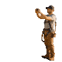

Instagram · 1080 × 1080
Field service · AI
Win 1 in 3 quotes on-site
Build a branded estimate in the driveway — and send it before you leave.

Story / Reel · 1080 × 1920
The AI OS for field service
From first call to final invoice
Schedule the right tech, win the quote on-site, and get paid faster — with AI doing the busywork.
Book a demo →


LinkedIn / X · 1200 × 630
Zuper Sense
AI that dispatches, summarizes & spots the margin
Quote card · 1080 × 1080
“
Your software blows any software out of the water. For roofing, this is just the best.
CL
Chris Little
Office Manager, Dickinson Roofing
Zuper Sense · 1080 × 1080
Zuper Sense
AI that runs in the background
Auto-dispatch, job summaries and margin alerts — before the week is lost.
Stat card · 1080 × 1080
The impact · first 90 days
28%
less drive time per crew, every week

Job costing · 1080 × 1080
Job costing & profitability
See the margin on every job
Gross profit updates live on the job card as costs come in. No spreadsheets.
Intelligent Quoting · 1080 × 1080
Intelligent Quoting
Good. Better.
Best — every time.
Good
Better
Best
Testimonial · 1080 × 1080
LC
★★★★★
Zuper took a huge load off our office, saved time on every job, and made inspections safer and more professional.
Lisa Crocker
Chief Admin Officer, Roof Doctors
CTA · 1200 × 630
Ready to run a tighter operation?
Set up in a day. No rip-and-replace.
Book a demo →
Stat card · 1080 × 1080
Intelligent Quoting
4×
premium product sales — no new hires
Hiring story · 1080 × 1920
We're hiring
Join a crew that runs on Zuper
New hires run clean jobs in weeks — guided workflows do the heavy lifting.
See open roles →
Zuper Sense · 1080 × 1080
Zuper Sense
It dispatches the nearest qualified tech
Sense reads the job, the location and the load — and routes the right crew.
Industries · 1080 × 1080
Built for your trade
Tuned to how your crews work
Roofing
HVAC
Plumbing
Electrical
Solar
Feature · 1200 × 630
Scheduling & Dispatch
One board for every crew, every job
Drag a job, reassign a tech — the customer gets an updated ETA automatically.
Product · Dispatch · 1080 × 1080
Scheduling & Dispatch
Dispatch on autopilot
Product · Quoting · 1080 × 1080
Intelligent Quoting
Good, better, best — in under a minute
Product · Job costing · 1200 × 630
Job costing & profitability
Know the margin before the job closes
Product · Mobile · 1080 × 1920
The mobile app
Built mobile-first for the crew
Everything a tech needs on the job — checklists, photos, costs and sign-off — in one app.
Zuper Glass · 1080 × 1080
See it. Say it. Get it done.
AI smart glasses built for the trades — damage detection and job context, hands-free.
Explore Zuper Glass →
Stat card · 1080 × 1080
Guided selling
98%
faster new-hire ramp-up — selling like a pro on day one

Testimonial · 1080 × 1080
Customer story
Zuper took the operational noise out of the business — so we could focus on growth.
JT Ulyatt
CEO, Maven Roofing
Testimonial · 1080 × 1080
It’s mobile-first — and for the guys out in the field, that’s where it really shines.
CK
Cooper Knutson
Bookkeeper, Russell’s Quality Roofing
Testimonial · Zuper Glass · 1080 × 1080
Zuper Glass has already saved my life once on a roof. I won’t go up without it.
JM
Testimonial · split · 1200 × 630
NM
Noe Madrigal
Founder & CEO, A&A Roofing
★★★★★
“
As you scale you need a CRM, photo management, a phone system and a proposal builder. With Zuper, we have all of it in one place.
Testimonial · proof wall · 1200 × 630
Loved by roofers
★★★★★
Zuper blows any software out of the water. For roofing, this is just the best.
CLChris Little
Dickinson Roofing
★★★★★
A huge load off our office — every job is faster, and inspections are safer and more professional.
Testimonial · rating strip · 1080 × 1920
★★★★★
Roofers don't go back
It's designed mobile-first, and for the guys in the field, it really, really shines.
Cooper Knutson · Russell's Quality Roofing
Zuper Glass has already saved my life once — both hands free, I caught myself on a wet roof.
John Marrah · Marasun